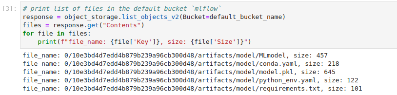
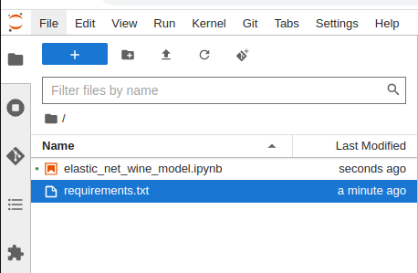

MLFlow¶
This tutorial will guide you through the integration of MLFlow with Kubeflow using Juju with Microk8s. This integration enables true automated model lifecycle management using MLFlow metrics and the MLFlow model registry.
MLFlow is a platform to streamline machine learning development, including tracking experiments, packaging code into reproducible runs, and sharing and deploying models.
MLflow-Kubeflow integration requires a relation between MLflow and MinIO operator, that you will learn more about in the guide. MinIO is used to store artifacts produced by MLflow runs (files, models, images, in-memory objects, model summary, etc). In the last section of this tutorial, you’ll learn how to access the artifact store using MinIO client or boto3 APIs.
Prerequisites¶
You have already installed Kubeflow on your cluster (full or lite version).
You can access the kubeflow dashboard.
Get Started with MLFlow - Charmed Kubeflow integration¶
Deploy mlflow-server and mlflow-db¶
In an Ubuntu terminal window, run the following commands to deploy mlflow-server and mlflow-db.
juju deploy mlflow-server
juju deploy charmed-osm-mariadb-k8s mlflow-db
Run watch juju status to watch the application status of mlflow-db become active and mlflow-server to be waiting for mysql relation data. This takes about a minute.
Add the relations between components¶
For mlflow-server to become active, you need to integrate applications that have been deployed with these commands:
juju relate minio mlflow-server
juju relate istio-pilot mlflow-server
juju relate mlflow-db mlflow-server
juju relate mlflow-server admission-webhook
Run watch juju status --relations to see the relations you created. Relations are created almost immediately. You should then wait a few minutes for the mlflow-server unit to have active status so you can access the dashboard next.
Access the Dashboard¶
If you followed the previous steps to deploy MLFlow with Kubeflow, you could access the dashboard by going to http://10.64.140.43.nip.io/mlflow/#/
Otherwise, run microk8s kubectl get services -A | grep "mlflow-server", and open the MLFlow ClusterIP in the browser with :5000 on the end.
Run an example model with Kubeflow¶
Note
Temporary workaround for missing pod-defaults
Run the following command to make a copy of pod defaults to the user’s namespace, which is admin following the guide.
microk8s kubectl get poddefaults mlflow-server-minio -o yaml -n kubeflow | sed 's/namespace: kubeflow/namespace: admin/' | microk8s kubectl create -f -
Open the Kubeflow dashboard by going to http://10.64.140.43.nip.io/ and log in with the username and password .
Create a new Notebook Server, taking care to specify the mlflow-server-minio configuration, by ticking the box next to it. This will ensure that the correct environment variables are set so that the MLflow SDK can connect to the MLflow server.

For an example code, upload or paste the Elastic Net wine model notebook to the Notebook server.
Run the first two cells and observe that your model metrics are recorded in MLflow as shown in the cell output below. You can see the RMSE, MAE, and R2 for the run model.
Run the third cell to view a list of files in the object storage.
In the last cell, replace <minio file path> with the path of the file you want to download. Use the object path listed in the output of the previous cell, and replace <notebook server file path> with the desired destination file for the downloaded object.
For example, to download requirements.txt listed in the above screenshot, run object_storage.download_file(default_bucket_name,'0/10e3bd4d7edd4b879b239a96cb300d48/artifacts/model/requirements.txt','requirements.txt')
The downloaded object will show up in the file browser on the left.
Access Artifacts¶
Based on the setup in the Get Started section, artifacts are stored in MinIO. Artifacts include output files recorded by MLflow runs in any format such as models, data files, and images.
You could access the artifacts using the MinIO client or boto3 with python.
Get MinIO access and secret key¶
To access the artifacts, you first need to get MinIO access and secret key for authentication.
Find admission webhook unit’s name
juju status | grep admission-webhook/
copy the unit’s name to use it in the next command
Run the command below to get MinIO
envs
juju show-unit <admission webhook unit name> | yq .admission-webhook/*.relation-info[0].application-data
The expected results will look similar to the one below. Save your AWS_ACCESS_KEY_ID and AWS_SECRET_ACCESS_KEY as you will need them in the next part to use MinIO client.
pod-defaults: '{"minio": {"env": {"AWS_ACCESS_KEY_ID": "some id", "AWS_SECRET_ACCESS_KEY": "some secret key", "MLFLOW_S3_ENDPOINT_URL": "http://minio.kubeflow:9000", "MLFLOW_TRACKING_URI": "http://mlflow-server.kubeflow.svc.cluster.local:5000"}}}'
Note
The environment variables would be the same even if MinIO is not on AWS, it’s based on MinIO’s configuration not the cloud provider.
MinIO client¶
Install MinIO client following the official guide.
After that set alias for the MinIO.
mc alias set <alias> http://`juju status --format yaml | yq .applications.minio.units.minio/*.address`:9000 $AWS_ACCESS_KEY_ID $AWS_SECRET_ACCESS_KEY
List content in the default Mlflow bucket. This will show the files recorded by your MLflow run done in the previous section.
mc ls <alias>/mlflow
Read the content of a specific file stored in MLFlow during a run.
mc cat <alias>/<path to file>
Boto3¶
Boto3 is the AWS SDK for Python. It provides a Python API to interact with AWS services.
This code is also included in the example notebook.
import boto3
minio = boto3.client(
"s3",
endpoint_url=os.getenv("MLFLOW_S3_ENDPOINT_URL"),
config=boto3.session.Config(signature_version="s3v4"),
)
Note
If you are accessing the bucket outside of a Kubeflow Notebook server, replace the os env with MinIOunit IP, with :9000 at the end.
Run this in the terminal to get the IP:
echo http://`juju status --format yaml | yq .applications.minio.units.minio/*.address`:9000
To list files in the default bucket mlflow:
response = minio.list_objects_v2(Bucket="mlflow")
files = response.get("Contents")
for file in files:
print(f"file_name: {file['Key']}, size: {file['Size']}")
To download a specific file:
minio.download_file(default_bucket_name,'<minio file path>', '<notebook server file path>')
For more information, see Boto3 docs.